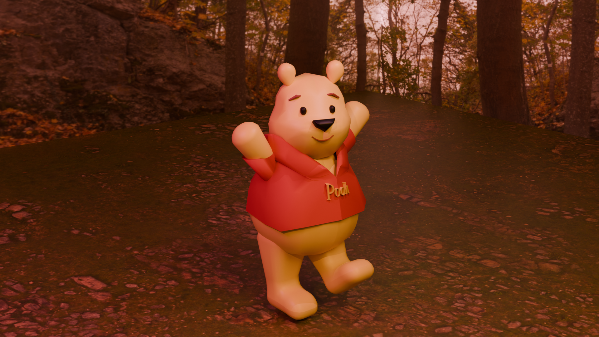
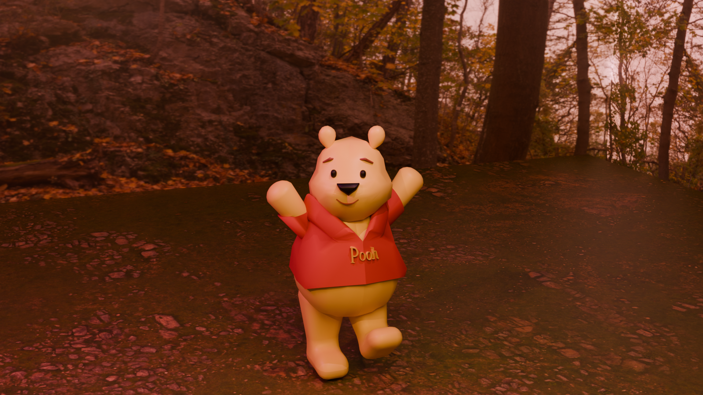
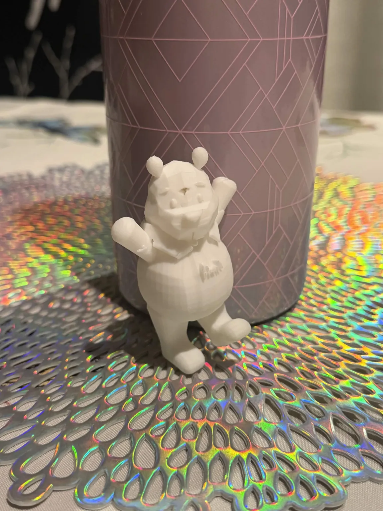

the exploration physical forms in a digital space
I chose to create a model of Winnie the Pooh. I chose to do Winnie the Pooh because he is one of my comfort characters that I closely resonate with, so choosing him seemed the most authentic for me. The process started with building his head, body, and limbs. Then adding details like his facial features and his shirt. I mostly used the proportional editing tool to sculpt his body and the mirror tool to make sure his body was symmetrical. However, the mirror tool came with its own complications, so the face orientation tool also helped make sure all of the model's faces were facing outward. I posed him with his arms out and stepping forward to make it look like he just woke up and stretched for a morning walk. I used the area lighting and sun light in an orange hue to give a warm feeling to the final rendered image. There's also a pink area light on the left used as a stylistic detail for more color variety. I also used text to write his name on his shirt, which is usually featured on many plushies of him!

"pooh (render 1)" created with blender, 2026

"pooh (render 2)" created with blender, 2026
"robot" created with blender, 2026
"table" created with blender, 2026

"pooh, 3d printed" created with blender, 2026